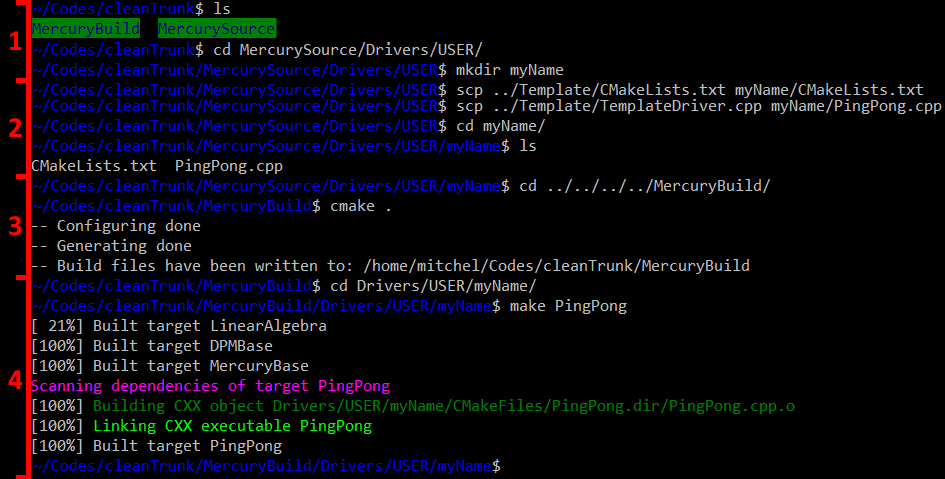

Before you start
Before you read about how to write your own code, we recommend you to work through the Tutorials. These tutorials explain the basic construction of the codes. After this, you will be familiar with the code design. You also will compile, run and visualise the simulations, so you will know the general tools available to you.
To explain how to creat your own code, a single particle bouncing between two walls will be created from a scratch; we will call it PingPong.cpp. Some of you want to use the terminal and some others an IDE, so we will show you both ways.
The first thing you need is a place to put your code. You can create your own code in one of the existing Driver directories, but we recommend you creating your own directory. This is how you do it: These steps are also explained by the figure below, the numbers indicate the steps.
- Create the directory in which you want to put the driver code, for example Drivers/USER/myName.
- Copy the CMakeLists.txt and the TemplateDriver.cpp into the just created directory. Make sure that you rename the TemplateDriver.cpp to a file with a unique name (e.g. PingPong), otherwise make will generate an error.
- Now that we have a new cpp file, we need to execute cmake to create a make command. You do this by executing cmake in the root of the build directory (e.g. MercuryBuild).
- Build the executable by using the fileName of the cpp file, e.g. make PingPong

Now let's take a look how we can implement the PingPong example.
How to write your own code
The basic steps to create a simple Mercury program are:
0.0 Define headers
Here the user includes the headers to use in the simulations. The first header calls <Mercury3D.h> is the base one. Furthermore, this PingPong tutorial must have walls and the type of model (species) to be used.
#include <Mercury3D.h>
#include <Walls/InfiniteWall.h>
#include <Species/LinearViscoelasticSpecies.h>
There are different type of walls, you can find further information in Different types of walls.
There are several contact models and species to interact with combined classes. You can find more information in Contact Models in MercuryDPM.
1.0 Before the main function
1.1.1 Constructor: General and unchangeable parameters during the simulation
class pingPongTest : public DPMBase {
public:
explicit pingPongTesTest(Mdouble radius)
- Output configuration and general specifications.
setName("PingPong")
setFileType(FileType::ONE_FILE);
setGravity(Vec3D(0.0, 0.0,0.0));
- Particle species. Material properties and positions
// particle properties
LinearViscoelasticSpecies sf;
sf.setHandler(&speciesHandler);
sf.setDensity(1000);
const Mdouble mass = sf.getMassFromRadius(radius);
sf.setStiffnessAndRestitutionCoefficient(1.0 * radius, 1.0, mass);
const Mdouble collisionTime = sf.getCollisionTime(mass);
auto species = speciesHandler.copyAndAddObject(sf);
//Positions
SphericalParticle P0, P1;
P0.setSpecies(species);
P1.setSpecies(species);
P0.setRadius(radius);
P1.setRadius(radius);
P0.setPosition(Vec3D(-1.50 * radius, 0, 0));
P0.setVelocity(Vec3D(0.001,0,0));
P1.setPosition(-P0.getPosition());
P1.setVelocity(-P0.getVelocity());
particleHandler.copyAndAddObject(P0);
particleHandler.copyAndAddObject(P1);
- walls
InfiniteWall w0;
w0.setSpecies(speciesHandler.getObject(0));
w0.set(Vec3D(1.0, 0.0, 0.0), Vec3D(getXMax(), 0.0, 0.0));
wallHandler.copyAndAddObject(w0);
w0.set(Vec3D(-1.0, 0.0, 0.0), Vec3D(getXMin(), 0.0, 0.0));
wallHandler.copyAndAddObject(w0);
w0.set(Vec3D(0.0, 1.0, 0.0), Vec3D(0.0, getYMax(), 0.0));
wallHandler.copyAndAddObject(w0);
w0.set(Vec3D(0.0, -1.0, 0.0), Vec3D(0.0, getYMin(), 0.0));
wallHandler.copyAndAddObject(w0);
- time integration parameters
setSaveCount(10000);
setTimeMax(10);
setTimeStep(0.0000005 * 50);
1.1.1 Member functions
- Time display, energy, etc.
void printTime() const override {
std::cout << "t=" << std::setprecision(3) << std::left << std::setw(6) << getTime()
<< std::endl;
}
2.0 Main function
2.1 User specifications
int main(int argc UNUSED, char *argv[] UNUSED)
{
Mdouble radius = 0.01
pingPongTes sp0(radius);
sp0.solve();
}
If the user wants to implement a new contact model interaction (a new species), you could get more information of how clicking Creating a new species.
Using restart option
The user can also write a program reading information from previous results or programs. For this, the restart option must be included in the main function. You could get further information in How to restart MercuryDPM driver codes